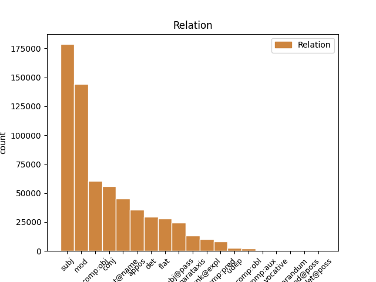
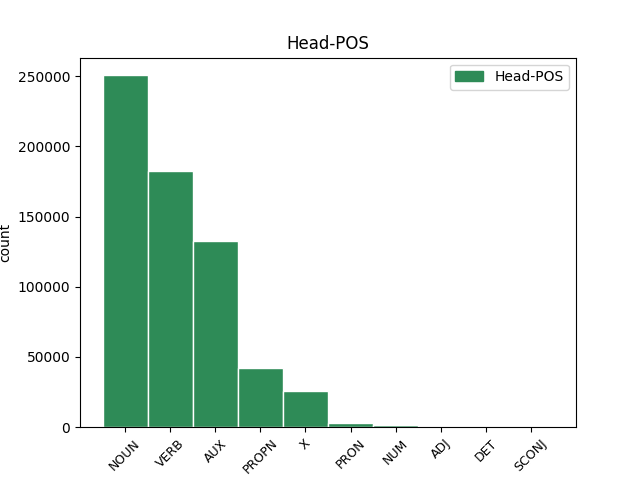
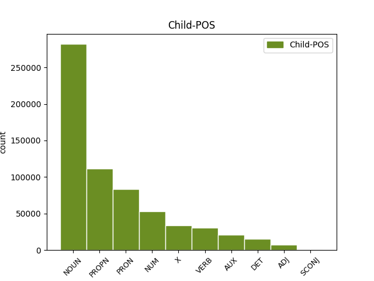

Distribution of features within this leaf



Agreement Rules sorted by frequency.
1 Iomega _ _ _ _ 0 _ _ _
2 , _ _ _ _ 0 _ _ _
3 Spezialist _ _ _ _ 0 _ _ _
4 für _ _ _ _ 0 _ _ _
5 Speicherlösungen _ _ _ _ 0 _ _ _
6 , _ _ _ _ 0 _ _ _
7 liefert _ _ _ _ 0 _ _ _
8 nun _ _ _ _ 0 _ _ _
9 seinen _ _ _ _ 0 _ _ _
10 portablen _ _ _ _ 0 _ _ _
11 CD-RW-Brenner Brenner NOUN NN Gender=Masc|Number=Sing|Person=3 0 _ _ _
12 Predator unknown NOUN NN Person=3 11 appos _ _
13 in _ _ _ _ 0 _ _ _
14 den _ _ _ _ 0 _ _ _
15 USA _ _ _ _ 0 _ _ _
16 aus _ _ _ _ 0 _ _ _
17 . _ _ _ _ 0 _ _ _
Disagree Examples:
1 Wir _ _ _ _ 0 _ _ _
2 werden _ _ _ _ 0 _ _ _
3 alles _ _ _ _ 0 _ _ _
4 daran _ _ _ _ 0 _ _ _
5 setzen _ _ _ _ 0 _ _ _
6 , _ _ _ _ 0 _ _ _
7 unsere unsere PRON PPOSAT Case=Acc|Gender=Fem|Number=Sing|Person=1|Poss=Yes|PronType=Prs 9 det _ _
8 gute _ _ _ _ 0 _ _ _
9 Position Position NOUN NN Gender=Fem|Number=Sing|Person=3 0 _ _ _
10 in _ _ _ _ 0 _ _ _
11 den _ _ _ _ 0 _ _ _
12 nächsten _ _ _ _ 0 _ _ _
13 Jahren _ _ _ _ 0 _ _ _
14 weiter _ _ _ _ 0 _ _ _
15 auszubauen _ _ _ _ 0 _ _ _
16 und _ _ _ _ 0 _ _ _
17 insbesondere _ _ _ _ 0 _ _ _
18 bei _ _ _ _ 0 _ _ _
19 den _ _ _ _ 0 _ _ _
20 mobilen _ _ _ _ 0 _ _ _
21 Multimediadiensten _ _ _ _ 0 _ _ _
22 weltweit _ _ _ _ 0 _ _ _
23 eine _ _ _ _ 0 _ _ _
24 Spitzenposition _ _ _ _ 0 _ _ _
25 zu _ _ _ _ 0 _ _ _
26 erreichen _ _ _ _ 0 _ _ _
27 . _ _ _ _ 0 _ _ _
28 " _ _ _ _ 0 _ _ _
1 " _ _ _ _ 0 _ _ _
2 Ich _ _ _ _ 0 _ _ _
3 bekomme bekommen VERB VVFIN Mood=Ind|Number=Sing|Person=1|Tense=Pres|VerbForm=Fin 0 _ _ _
4 pro _ _ _ _ 0 _ _ _
5 Tag _ _ _ _ 0 _ _ _
6 30 30 NUM CARD Number=Plur|NumType=Card|Person=3 3 comp:obj _ _
7 bis _ _ _ _ 0 _ _ _
8 40 _ _ _ _ 0 _ _ _
9 neue _ _ _ _ 0 _ _ _
10 Vorschläge _ _ _ _ 0 _ _ _
11 " _ _ _ _ 0 _ _ _
12 , _ _ _ _ 0 _ _ _
13 sagt _ _ _ _ 0 _ _ _
14 Bianca _ _ _ _ 0 _ _ _
15 Geist _ _ _ _ 0 _ _ _
16 vom _ _ _ _ 0 _ _ _
17 Trendbüro _ _ _ _ 0 _ _ _
18 . _ _ _ _ 0 _ _ _
1 " _ _ _ _ 0 _ _ _
2 Ich _ _ _ _ 0 _ _ _
3 bekomme bekommen VERB VVFIN Mood=Ind|Number=Sing|Person=1|Tense=Pres|VerbForm=Fin 0 _ _ _
4 pro _ _ _ _ 0 _ _ _
5 Tag _ _ _ _ 0 _ _ _
6 30 _ _ _ _ 0 _ _ _
7 bis _ _ _ _ 0 _ _ _
8 40 _ _ _ _ 0 _ _ _
9 neue _ _ _ _ 0 _ _ _
10 Vorschläge _ _ _ _ 0 _ _ _
11 " _ _ _ _ 0 _ _ _
12 , _ _ _ _ 0 _ _ _
13 sagt sagen VERB VVFIN Mood=Ind|Number=Sing|Person=3|Tense=Pres|VerbForm=Fin 3 parataxis _ _
14 Bianca _ _ _ _ 0 _ _ _
15 Geist _ _ _ _ 0 _ _ _
16 vom _ _ _ _ 0 _ _ _
17 Trendbüro _ _ _ _ 0 _ _ _
18 . _ _ _ _ 0 _ _ _
1 Siehe sehen VERB VVIMP Mood=Imp|Number=Sing|Person=2|VerbForm=Fin 0 _ _ _
2 dazu _ _ _ _ 0 _ _ _
3 auch _ _ _ _ 0 _ _ _
4 den _ _ _ _ 0 _ _ _
5 Bericht Bericht NOUN NN Gender=Masc|Number=Sing|Person=3 1 comp:obj _ _
6 " _ _ _ _ 0 _ _ _
7 Saudi _ _ _ _ 0 _ _ _
8 Arabien _ _ _ _ 0 _ _ _
9 sperrt _ _ _ _ 0 _ _ _
10 wegen _ _ _ _ 0 _ _ _
11 Pornographie _ _ _ _ 0 _ _ _
12 Zugang _ _ _ _ 0 _ _ _
13 zu _ _ _ _ 0 _ _ _
14 den _ _ _ _ 0 _ _ _
15 Yahoo-Clubs _ _ _ _ 0 _ _ _
16 - _ _ _ _ 0 _ _ _
17 Die _ _ _ _ 0 _ _ _
18 Bürger _ _ _ _ 0 _ _ _
19 des _ _ _ _ 0 _ _ _
20 Königreichs _ _ _ _ 0 _ _ _
21 können _ _ _ _ 0 _ _ _
22 nur _ _ _ _ 0 _ _ _
23 über _ _ _ _ 0 _ _ _
24 einen _ _ _ _ 0 _ _ _
25 Proxy _ _ _ _ 0 _ _ _
26 , _ _ _ _ 0 _ _ _
27 auf _ _ _ _ 0 _ _ _
28 dem _ _ _ _ 0 _ _ _
29 Filter _ _ _ _ 0 _ _ _
30 installiert _ _ _ _ 0 _ _ _
31 sind _ _ _ _ 0 _ _ _
32 , _ _ _ _ 0 _ _ _
33 ins _ _ _ _ 0 _ _ _
34 Internet _ _ _ _ 0 _ _ _
35 " _ _ _ _ 0 _ _ _
36 in _ _ _ _ 0 _ _ _
37 Telepolis _ _ _ _ 0 _ _ _
38 . _ _ _ _ 0 _ _ _
1 " _ _ _ _ 0 _ _ _
2 Wir _ _ _ _ 0 _ _ _
3 sind sein AUX VAFIN Mood=Ind|Number=Plur|Person=1|Tense=Pres|VerbForm=Fin 0 _ _ _
4 weiterhin _ _ _ _ 0 _ _ _
5 davon _ _ _ _ 0 _ _ _
6 überzeugt _ _ _ _ 0 _ _ _
7 , _ _ _ _ 0 _ _ _
8 dass _ _ _ _ 0 _ _ _
9 die _ _ _ _ 0 _ _ _
10 Angaben _ _ _ _ 0 _ _ _
11 korrekt _ _ _ _ 0 _ _ _
12 sind _ _ _ _ 0 _ _ _
13 " _ _ _ _ 0 _ _ _
14 , _ _ _ _ 0 _ _ _
15 sagte sagen VERB VVFIN Mood=Ind|Number=Sing|Person=3|Tense=Past|VerbForm=Fin 3 parataxis _ _
16 ein _ _ _ _ 0 _ _ _
17 Unternehmens-Sprecher _ _ _ _ 0 _ _ _
18 gegenüber _ _ _ _ 0 _ _ _
19 heise _ _ _ _ 0 _ _ _
20 online _ _ _ _ 0 _ _ _
21 . _ _ _ _ 0 _ _ _